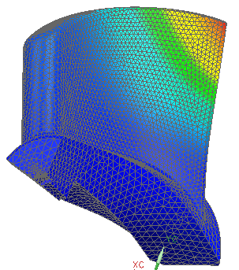

Display the results
 Simulation Navigator
Simulation Navigator
-
 Results
Results
 Post-Processing Navigator
Post-Processing Navigator
-

 Displacement (expand)
Magnitude
Displacement (expand)
Magnitude
After viewing the displacement magnitude results, try displaying the Von Mises results under Stress - Element - Nodal.
When you finish looking at the results, return to the model.
 Return to Model (Layout Manager toolbar)
Return to Model (Layout Manager toolbar)
 File→ Close→ All Parts
File→ Close→ All Parts
For the full version of this activity, see the NX Advanced Simulation self-paced training (CAST or Learning Advantage).